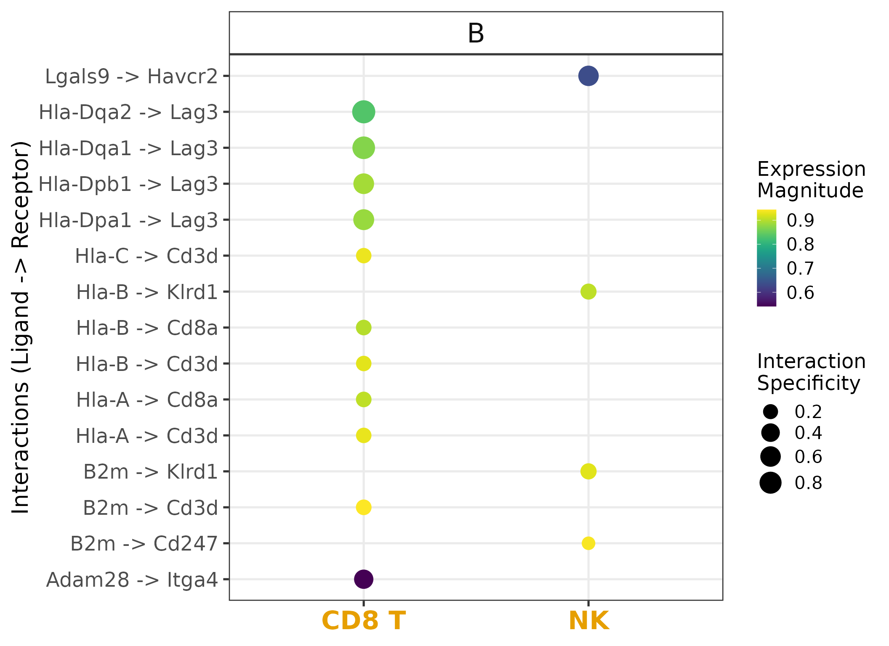

vignettes/liana_ortho.Rmd
liana_ortho.RmdLIANA’s OmniPath resource was largely compiled from CCC databases with a human focus, as such LIANA works with human gene symbols by default.
Nevertheless, one could run LIANA with any other organism, provided a dictionary is available to map human genesymbols to those of species X.
In this vignette, we provide an example how this could be achieved using the HomoloGene database via OmnipathR with LIANA’s generate_homologs function.
Note that LIANA provides a mouse Consensus (MouseConsensus) resource, using the homology-conversion approach described here.
library(tidyverse)
library(OmnipathR)
library(liana)
library(magrittr)
liana_path <- system.file(package = "liana")
testdata <-
readRDS(file.path(liana_path, "testdata", "input", "testdata.rds"))
# Convert testdata to putative mouse symbols
# Note that we explicitly provide this tutorial to avoid any such conversions when working with real data
# We simply do this here to provide an example
rownames(testdata@assays$RNA@counts) <- stringr::str_to_title(rownames(testdata@assays$RNA@counts))
rownames(testdata@assays$RNA@data) <- stringr::str_to_title(rownames(testdata@assays$RNA@data))It is also recommended to ensure that you have the latest OmnipathR version installed:
remotes::install_github("saezlab/OmnipathR")LIANA’s generate_homologs function uses OmnipathR’s homologene_download function to obtain a human to x species dictionary.
Here, we check the organisms which are currently available.
One must simply choose the ncbi_taxid and pass it as target_organism parameter to the generate_homologs function below.
## # A tibble: 12 × 3
## ncbi_taxid name latin
## <int> <chr> <chr>
## 1 6239 Caenorhabditis elegans (PRJNA13758) Caenorhabditis elegans
## 2 9031 Chicken Gallus gallus
## 3 9598 Chimpanzee Pan troglodytes
## 4 9913 Cow Bos taurus
## 5 7227 D. melanogaster Drosophila melanogaster
## 6 9615 Dog Canis lupus familiaris
## 7 9606 Human Homo sapiens
## 8 9544 Macaque Macaca mulatta
## 9 10090 Mouse Mus musculus
## 10 10116 Rat Rattus norvegicus
## 11 8364 Tropical clawed frog Xenopus tropicalis
## 12 7955 Zebrafish Danio rerio
# Here, we will convert LIANA's Consensus resource to murine symbols
op_resource <- select_resource("Consensus")[[1]]
# Generate orthologous resource
ortholog_resource <- generate_homologs(op_resource = op_resource,
target_organism = 10090) # mouse
# Run LIANA with the orthologous resource
liana_res <- liana_wrap(testdata,
resource = 'custom', # resource has to be set to 'custom' to work with external resources
external_resource = ortholog_resource, # provide orthologous resource
method=c('sca', 'natmi') # run only with sca and natmi for comp. time
)
# aggregate
liana_res <- liana_res %>%
liana_aggregate()
# Plot example
liana_res %>%
filter(source=="B") %>%
filter(target %in% c("NK", "CD8 T")) %>%
liana_dotplot(source_groups = "B",
target_groups = c("NK", "CD8 T"),
ntop = 15)
Conversion is trickier than anticipated. In the sense that, there will be genes without matching homologs, while others will have multiple matching homologs. These issues are further complicated when working with complexes, as is the case for the interactions in LIANA. Some ligand–receptor interactions can also be species-specific.
Thus, we suggest that if possible to check literature for support of the predicted edges when using orthology conversion.
Notably, the generate_homologs function was designed to be very flexible, but by default will be relatively conservative. So, please refer to its documentation for more information.
In order to convert a human resource to any other organism, we need a dictionary which maps human gene symbols to their orthologs from another species, which might not be available via OmniPath.
An alternative widely used database for this purpose is BioMart.
## ACVR1 AGT FAS AR SERPING1 CD3G
## "Acvr1" "Agt" "Fas" "Ar" "Serping1" "Cd3g"One can then simply pass the symbols_dict to the symbols_dict param to generate_homologs, instead of specifying a tax id in target_organism.
Automatic conversion comes with some limitation, we thus also refer the user to external curated databases (e.g. murine CellChatDB), which can also be used with LIANA.